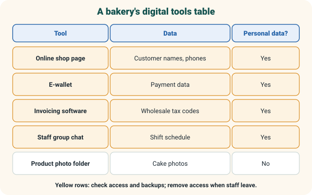

K10 · Digital skills, AI and workplace rules › Level 3 Secure
Review the course: lean digital operations, data and AI
This lesson completes Sheet 8: Digital tools table, data notice and AI rules. Print template. It builds on Use AI safely (N3). This lesson is not legal advice. Its legal examples come from Vietnam; sources are at the end.
1. Objectives
- Build a digital tools table: what data, whether personal data, who has access, where it is backed up.
- Write a data notice for customers and 3 AI rules.
2. Retrieval warm-up
These questions mix the whole course. Answer without looking, then open the answers.
- What are the three hypotheses on Sheet 1?
- Why must decision thresholds be written before the test runs?
- What are the three initiative behaviours?
- In the cash flow table, in which week is cash in recorded?
- What are the four questions for choosing a business form?
- Does calling someone a "freelancer" change the nature of the contract?
- What is the last part of a pitch, and what must it include?
Answers
- Customer; problem; willingness to pay.
- So you do not persuade yourself after the result that "nearly there is good enough".
- Self-starting; looking ahead; overcoming barriers.
- The week the money actually arrives, not the week of sale.
- Liability; owners; raising capital; paperwork.
- No. Work, pay and supervision make it an employment contract.
- The request: what you need, how much, for which milestone, by when.
Review: N7 course map.
3. Explanation
Small businesses often use many free digital tools, each person picking their own. After a year, nobody knows where customer data lives.
The digital tools table. One line per tool: what it is used for; what data; whether it holds personal data; who has access; where it is backed up.

Four minimum security habits:
- Turn on two-factor authentication for email, banking and your online shop.
- One account per person; no shared passwords.
- Remove access on the day an employee leaves.
- Back up important data in a second place.
The data notice. When you collect customers' personal data, tell them in plain words: what you collect; what for; how long you keep it; who can see it; whom to contact to delete or correct it.
Are small businesses exempt? (example: Vietnam) Vietnam's Personal Data Protection Law has a special article for small businesses. Small businesses and start-ups may choose whether to carry out certain obligations, for 5 years from 01/01/2026. Household businesses and micro-enterprises do not have to carry out those obligations.
There are exceptions. The exemption does not apply if you sell personal data processing services. Nor does it apply if you directly process sensitive personal data. Being exempt from some obligations does not mean you may use data however you like. Other countries have their own rules; check yours.
Three AI rules for a small business
- No customer datain any AI tool the owner has not approved.
- A person checks before sendingAnything AI writes for customers is reread by a person.
- Record it in the tableEvery AI tool in use has a line in the digital tools table.
4. Workplace example
Hypothetical scenario. Nadia, from Lesson 3, runs an online snack shop with 3 staff. A former employee who left 2 months ago can still log into the online shop.
She builds the digital tools table, with 6 tools. Three hold customers' personal data. Two share one password.
She changes the passwords, creates a separate account for each person and turns on two-factor authentication. She adds a step to the leaving process: remove access on the same day.
She writes a data notice and pins it to the shop page: "We keep your name, phone number and address to deliver your order. We keep them for 12 months, and only the owner and the courier can see them. To have them deleted, message us."
One employee uses AI to write adverts. She allows it, but no customer lists may be pasted in, and she rereads posts before they go out.
Why this works: she knows where the data lives and closes the gap left by the former employee. Customers know how their data is used.
5. Practice
Hypothetical scenario. Phil, from Lesson 3, runs an air-conditioner cleaning service with 5 staff. He keeps customers' addresses and phone numbers in a spreadsheet shared by link.
Write 3 lines of the digital tools table. Write a 3-sentence data notice. Write 3 AI rules for his team.
Hint 1
A spreadsheet shared by link: anyone with the link can see it. Is that a risk?
Hint 2
A data notice answers: what you collect, what for, how long you keep it, whom to contact.
Model answer
Digital tools table
- Customer spreadsheet. Data: name, address, phone number. Personal data: yes. Access: only Phil and the coordinator; link sharing turned off. Backup: download a copy each week.
- Team group chat. Data: appointments, customer addresses. Personal data: yes. Access: 5 staff; remove leavers the same day.
- Invoicing software. Data: company names, customers' tax codes. Access: Phil. Backup: by the provider.
Data notice: "We keep your name, address and phone number to book your cleaning. We keep them for 2 years, and only the coordinator and the assigned technician can see them. To delete or correct them, call our hotline."
3 AI rules: no customer data in unapproved AI tools; messages AI writes for customers are reread by a person; every AI tool is recorded in the table.
(The details are hypothetical.)
6. Self-check
Choose an answer. Every option has an explanation.
Question 1. An employee left yesterday. What must be done the same day?
-
Not quite. Meanwhile, the person who left can still reach customer data.
-
Correct. Correct. The table shows you everywhere they have access.
-
Not quite. You cannot check whether they have done it.
Question 2. A household business selling cakes online in Vietnam says: "We're a household business, so data law doesn't concern us." Which is more accurate?
-
Not quite. The law exempts only some obligations, with exceptions. Exemption does not mean using data freely.
-
Correct. Correct. Article 38 of Law 91/2025/QH15 exempts some obligations, with exceptions. A data notice is still good practice.
-
Not quite. The law has specific provisions for household businesses and micro-enterprises.
Question 3. (Review Lesson 2) The test result falls in the pivot zone. What should you do?
-
Correct. Correct. Changing one thing shows what makes the difference.
-
Not quite. Stopping is for the lowest zone, not the pivot zone.
-
Not quite. Changing the threshold after the result defeats its purpose.
Question 4. (Review Lesson 4) Fixed costs are 30,000 a month and gross profit per unit is 60. What is break-even?
-
Not quite. One zero is missing. Check the division again.
-
Correct. Correct. 30,000 ÷ 60 = 500.
-
Not quite. You may have divided the wrong way. Divide fixed costs by gross profit per unit.
Question 5. (Review Lesson 7) Which sentence should end a pitch?
-
Not quite. Thanks are polite, but the final part should be a specific request.
-
Correct. Correct. The request has a task, a quantity and a deadline.
-
Not quite. Belief is not a request, and it comes with no evidence.
7. Reflection
- If an employee left today, would you know which tools they can access?
- Looking back at the 8 sheets of your founder's handbook, which do you use most? Which are you still avoiding?
8. Real-world application
In the next 7 days, complete Sheet 8 and change any shared passwords. Then schedule a review of the whole course: after 7 days, 30 days and 3 months, reopen Sheets 2 and 4 and compare them with your real figures.
Last updated: 14/11/2026. Sources (example: Vietnam, checked 14/11/2026): Law on Personal Data Protection No. 91/2025/QH15, passed by the National Assembly on 26/6/2025, in force from 01/01/2026. Article 38(2): small businesses and start-ups may choose whether to apply Articles 21, 22 and 33(2). This option lasts 5 years from the date the Law takes effect. Article 38(3): household businesses and micro-enterprises do not have to apply those provisions, except in some cases. Decree 356/2025/ND-CP, issued 31/12/2025, detailing the Personal Data Protection Law. Law on Artificial Intelligence No. 134/2025/QH15, in force from 01/3/2026. This lesson only summarises the main points. When applying them, read the original texts and ask an expert.
9. Metadata
| skill | K10 · Digital skills, AI and workplace rules |
|---|---|
| level | Level 3 · Secure |
| group | N7 |
| framework_map | DigComp 3.0; WEF: Technological literacy; AI and big data; Networks and cybersecurity; SkillsFuture CCS: Digital Fluency; CSfW: 3e Use digital technology; EntreComp: Ethical and sustainable thinking (reference only) |
| original | Vietnamese version |
| updated | 2026-11-14 |
Finish the lesson
Mark it as done and the site suggests reviews after 1, 3 and 7 days. The data stays on your device only.
Suggested reviews: